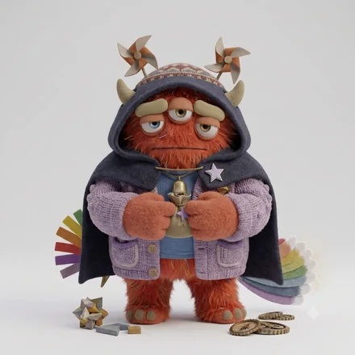

monster type
人とアイデアを出会わせて、熱を起こす人
モンスター名は、6軸の組み合わせにつけた分類名です。軸ごとの表現ではありません。
一言でいうと見極める火つけモンスター — A（確信）× C（慎重）
ENFP-A-Cとは、面白がる気持ちを内に持ちながら注ぐ先を見きわめ、選んだ一つに深く打ち込む人です。面白がる力と、選ぶ力の両方がある。いっぽうで、熱が見えないので、本気度を疑われる。
ENFP-A-C（ENFP-AC／ENFP AC）は、ベースコード ENFP に、独自軸のA（確信）とC（慎重）が重なるタイプです。64モンスターズでは「見極める火つけモンスター」と呼んでいます。
好奇心の幅が広く、人にもアイデアにも遠慮なく飛び込みます。その場を明るくし、停滞した状況に風を入れる存在です。熱の立ち上がりが速いぶん、持続の設計が課題になります。
熱を持ちながら、それをどこへ注ぐかを慎重に選ぶタイプ。直感に迷いはないのに、相手や場を見きわめるまで動かないので、外からは冷静な企画者に見えます。当たりの精度は高い代わりに、内側の熱量が周囲に伝わりません。
コードの読み方は64タイプ性格診断とはに、設問と採点の作り方はこの診断についてにまとめています。
実在の人物ではなく、役割と場面の類型で書いています。
強み
面白がる力と、選ぶ力の両方がある。飛びつく前に一度立ち止まれる、珍しいENFPです。
落とし穴
熱が見えないので、本気度を疑われる。「これはやりたい」と一度はっきり口に出すだけで、周りの動き方が変わります。
同僚に新しい企画の話を振られ、面白そうだと思いながら「少し考えます」と返したら、翌週には別の人に話が回っていた。
考える時間がほしいときは「面白い。金曜までに返事します」と、関心と期限を一緒に伝える。保留が、待ってもらえる形に変わります。
友人の集まりで、盛り上がっている話にすぐ乗らずに様子を見ていたら、「今日は元気がないね」と気をつかわれる。
乗るかどうかを決める前でも、感想を一言だけ挟んでおく。観察しているあいだも、その場を楽しんでいることが伝わります。
やると決めた企画に一人で深く入り込み、手伝いを申し出てくれた後輩に何を頼めばいいか分からなくなる。
作業を一つだけ切り出して渡してみる。見きわめてから組んだ相手なら、任せた部分から信頼が広がっていきます。
ENFP-A-Cは、好きになってから近づくまでに、間があります。そのあいだ、相手には何も見えていません。
かみ合う相手
こちらの様子を見ていてくれる相手。急かさずに待てる人となら、この人は必ず動きます。
気をつけたいところ
熱があることが伝わらないまま、機会が過ぎる。「これはやりたい」と一度はっきり言うだけで、周りの動き方が変わります。
力を発揮しやすい環境
人と接し、新しいことに関われる自由度の高い環境
担いやすい役割
企画、発信、コミュニティ、営業開拓
企画と分析を行き来できる。熱意を言葉で示すと味方が増える。
ENFP-A-Cは、誘いに即答しません。行くかどうかを本気で考えているのですが、返事が遅いぶん、周りには気が進まないのだと受け取られます。
すでに近い相手とのあいだで
選んだ相手にだけ、熱をそのまま出します。落差が大きいので、同じ人物の話とは思えないという評価が二方向から返ってきます。
まだ近くない相手とのあいだで
新しい場では、しばらく聞く側に回ります。乗るかどうかを測っているとは誰も思わないので、そのあいだに静かな人という席が用意されます。
恋人としてかみ合う相手
仕事のパートナーとして組みやすい相手
6軸の重みづけから計算した目安で、実際の関係を判定するものではありません。
ENFP-A-Cは「見極める火つけモンスター」です。面白がる気持ちを内に持ちながら注ぐ先を見きわめ、選んだ一つに深く打ち込む人です。熱を持ちながら、それをどこへ注ぐかを慎重に選ぶタイプ。直感に迷いはないのに、相手や場を見きわめるまで動かないので、外からは冷静な企画者に見えます。当たりの精度は高い代わりに、内側の熱量が周囲に伝わりません。
同僚に新しい企画の話を振られ、面白そうだと思いながら「少し考えます」と返したら、翌週には別の人に話が回っていた。友人の集まりで、盛り上がっている話にすぐ乗らずに様子を見ていたら、「今日は元気がないね」と気をつかわれる。やると決めた企画に一人で深く入り込み、手伝いを申し出てくれた後輩に何を頼めばいいか分からなくなる。
どちらも話す相手を選ぶので、外からは静かに見えます。ENFP-A-C は注ぐ先を決めたら迷わず打ち込み、ENFP-O-C は決めたあとも自分のなかで確かめ直して、出すまでに時間をかけます。A-C は動きだすと速く、O-C は出てきた案がよく練られています。
人と接し、新しいことに関われる自由度の高い環境で力を発揮しやすく、企画、発信、コミュニティ、営業開拓といった役割を担いやすいタイプです。ENFP-A-Cの場合は、企画と分析を行き来できる。熱意を言葉で示すと味方が増える。
好きになってから近づくまでに、間があります。そのあいだ、相手には何も見えていません。かみ合いやすいのは、こちらの様子を見ていてくれる相手。急かさずに待てる人となら、この人は必ず動きます。
同じものです。ENFP-A-C・ENFP-AC・ENFP AC は、いずれも同じ組み合わせを指します。